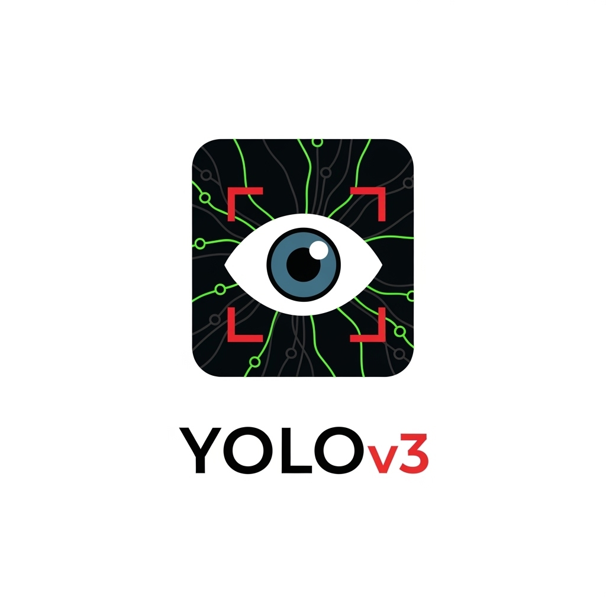
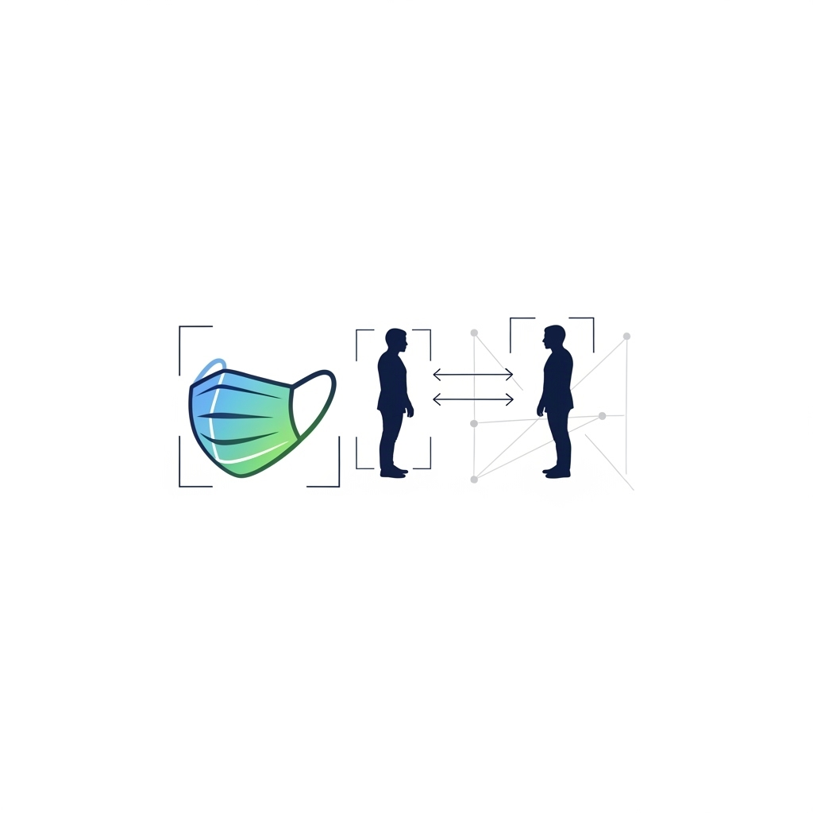
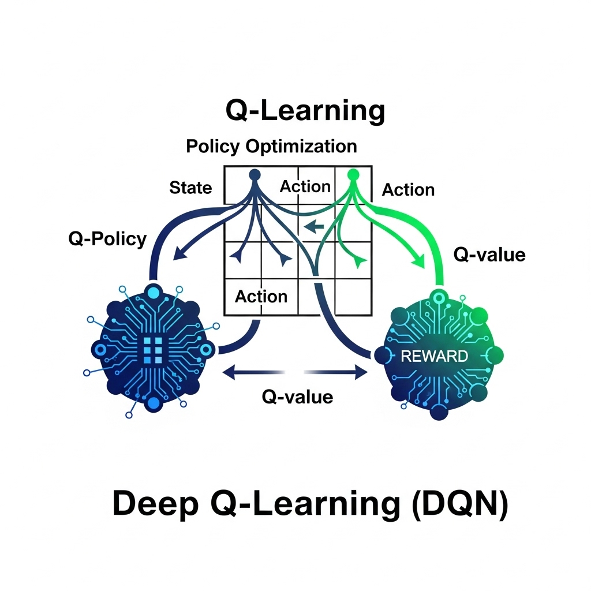
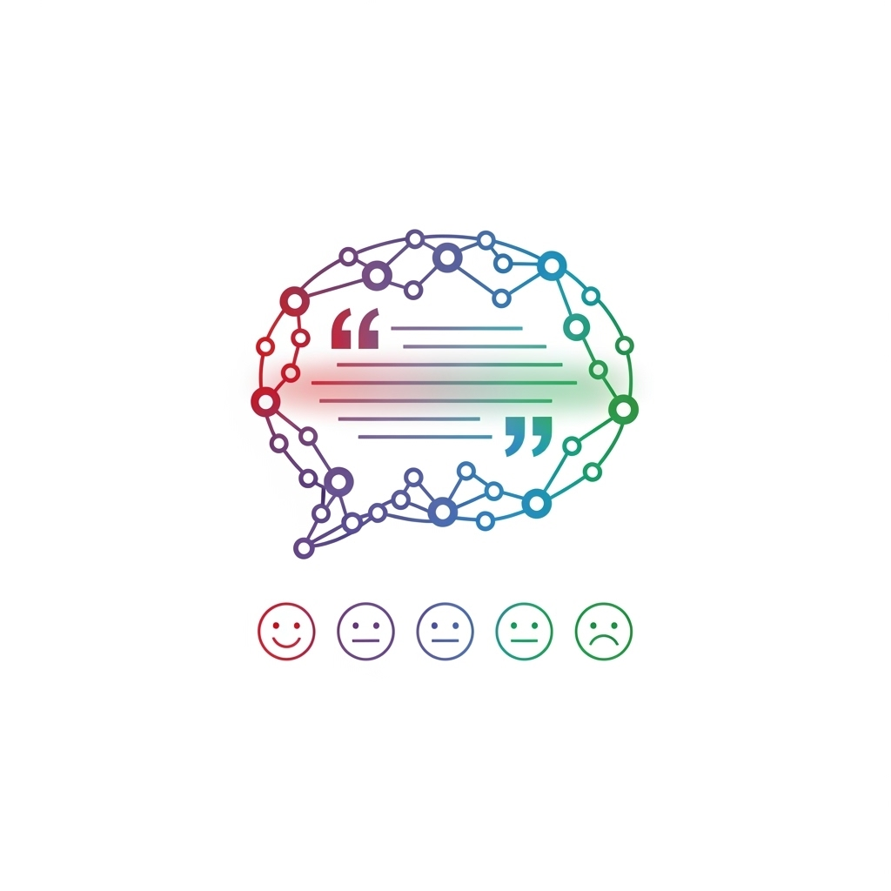
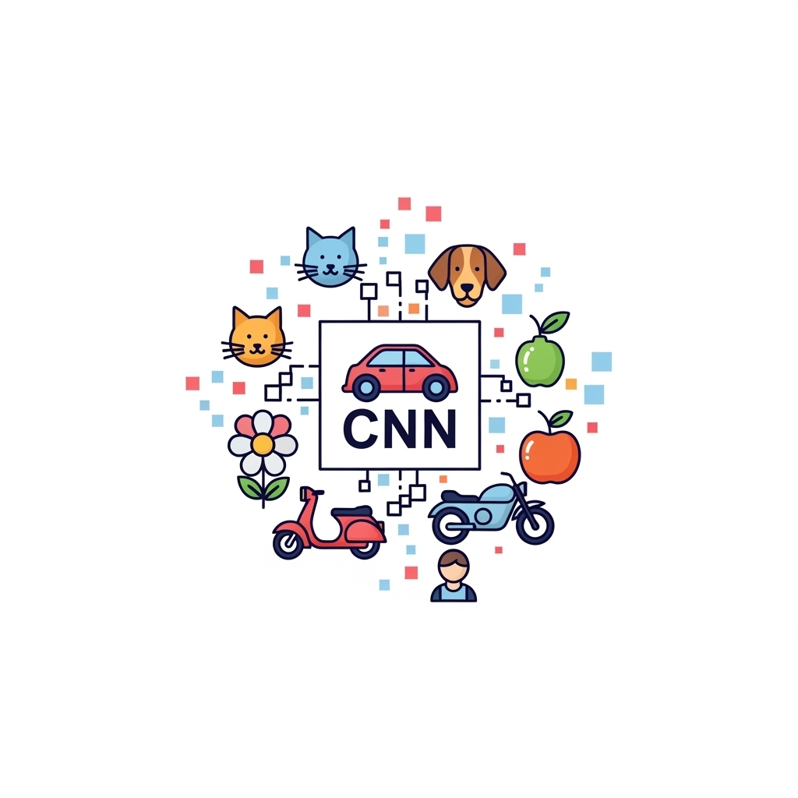
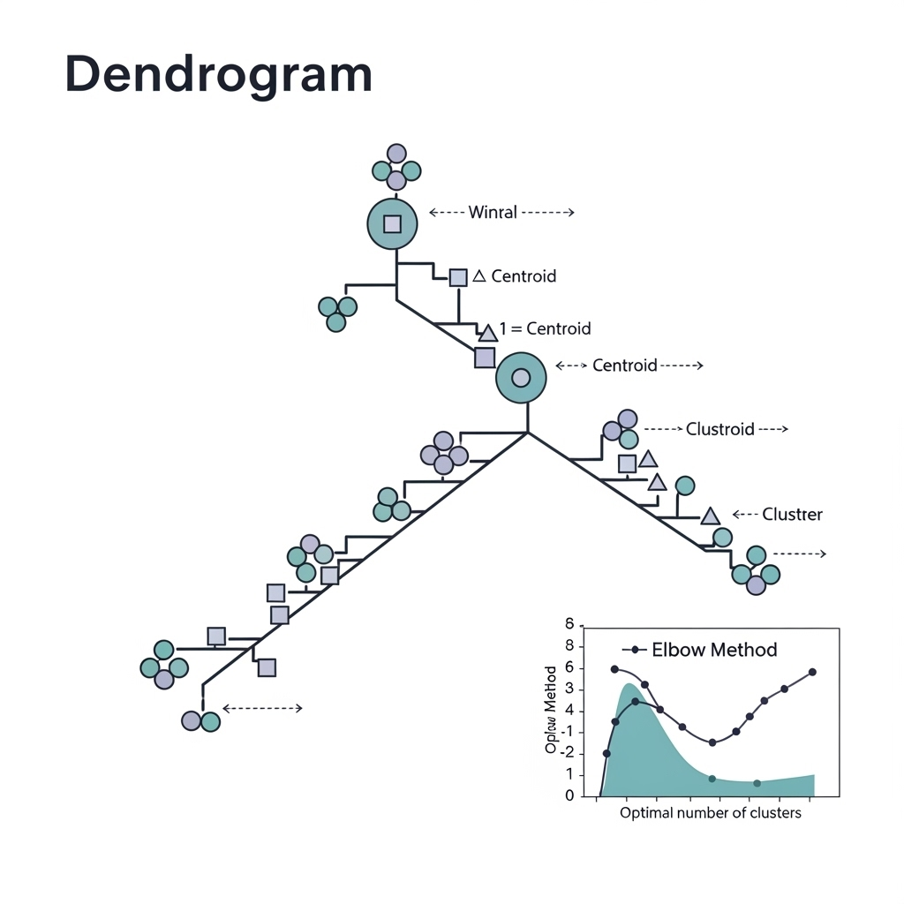
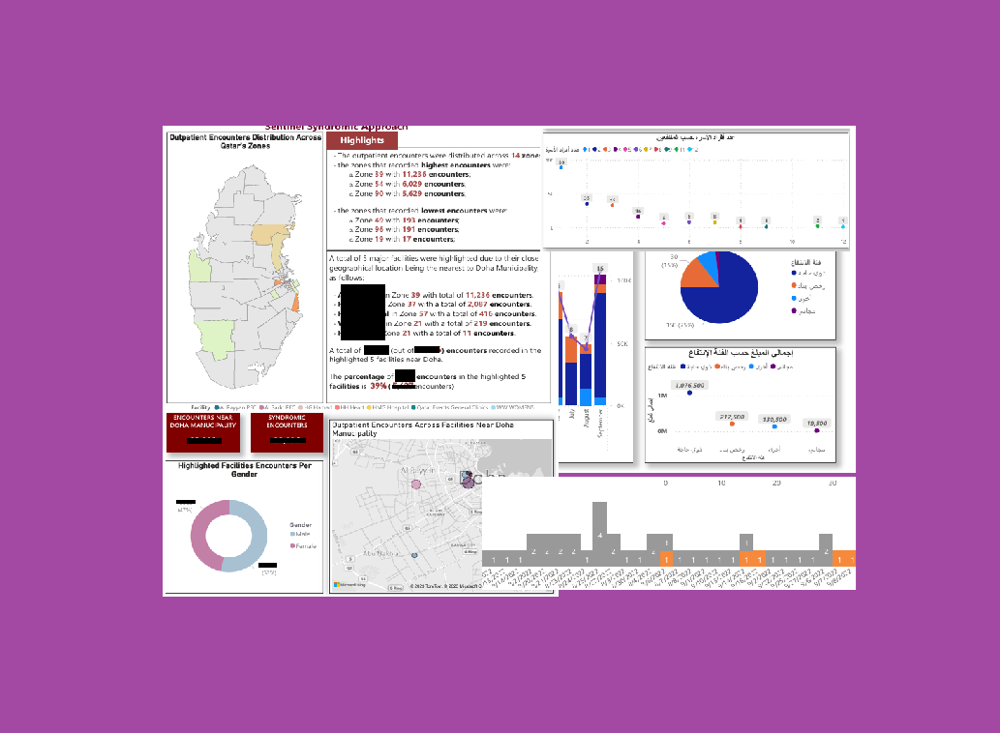
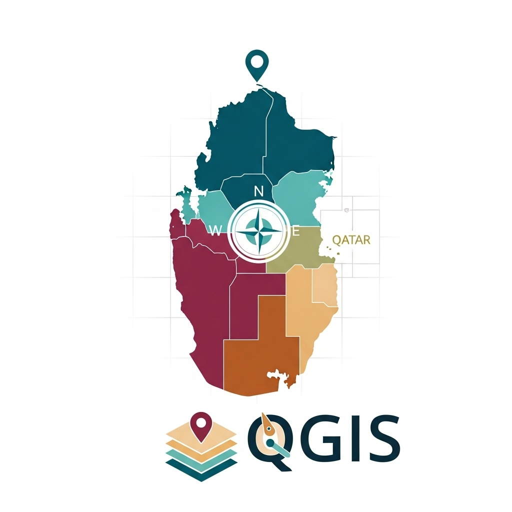
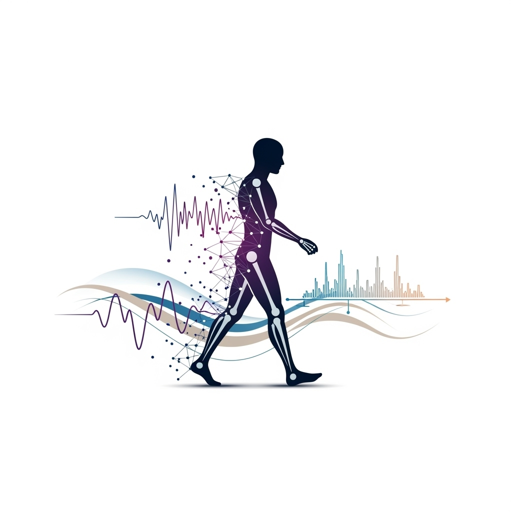

RAG: Personal Assistant Qatar HR Law and Directive
A demonstration on a RAG app framework using data from Qatar's HR Law and HR Directive (2016).
Data Shapes Our Future
Black swans are events that are 'outliers', seemingly random but with impact on our world.
It is impossible to predict these events, even though they are ultimately consequential.
A demonstration on a RAG app framework using data from Qatar's HR Law and HR Directive (2016).
Chat with your data utilizing powerful AI capabilities (OpenAI & LangChain).

A set of tools gathered and modified to fit the need on preprocessing computer vision datasets when preparing Yolov3 model.

Utilize Deep Learning model to detect face masks and social distance violation (Estimate).
Utilizing Deep Learning to predict of FIFA WC2022 qualifiers & final winner (Unfortunately Argentina Surprised Us With A Fantastic Performance).
Exercise on camera calibration and image reflection including depth estimation, 3D reconstruction, optical flow, object detection, and movement characteristics.
A repository that contains ML algorithms and processing on a question-paring dataset from Kaggle (Text Processing, Categorical Encoding, Advanced Feature Engineering, Binary Classification).

Exercise simulating a self-driving car using reinforcement learning Q-Learning (QL) and Deep Q-Learning (DQL).
A repository that contains practice code for ML algorithms implementation on a cancer treatment medical dataset from Kaggle (Text Processing, Response Encoding, Feature Engineering, Classification).

Text Sentimental Analysis using Natural Language Toolkit (NLTK).

CNN model to read, process, and classify images into classes (motorbike, dog, airplane, flower, fruit, cat, person, car).

Find optimal number of clusters using kmeans elbow method and dendrogram hierarchical clustering, analysis to assess within-cluster variance and inter-cluster linkage.
Understanding the high correlations between the quantitative and categorical features of movies released 1980 - 2020.
Understanding the high correlations between the quantitative and categorical features of movies released 1980 - 2020.
Extracting the list of official accommodations listed for WC2022.
Automate dataset creation from minimal list of diseases along with their corresponding diseases (Feature Engineer & Medical Encode).
Creates dataset using content scrapped from website(s)
Transforming complex data into clear, compelling visual stories, and dashboards. This project showcases interactive visuals that uncover hidden (insights, trends, and correlations) to support informed decision-making through intuitive storytelling.


Built Qatar Map using QGIS that can be used for geographical mapping and as a choropleth to visualize distribution for the state of Qatar by Municipality and Zone.
Visualize coronavirus stats based on ourworldindata.org/covid-deaths
A wrapper on top of python-OCR tools such as pytesseract and easyocr, to recognize and extract text embedded in images. Also, convert scanned-PDFs to text searchable PDFs.
ORCID (Open Researcher & Contributor ID) is a registry of unique identifiers for researchers and scholars that is open, non-profit, transparent, mobile and community-based.

The research aims to apply Recurrent Neural network (RNN) specifically LSTM to classify motion activities and human gait.
A review that focuses on the adaption of new technologies in post-pandemic household farming by sheding a light on various smart farming techniques and products.